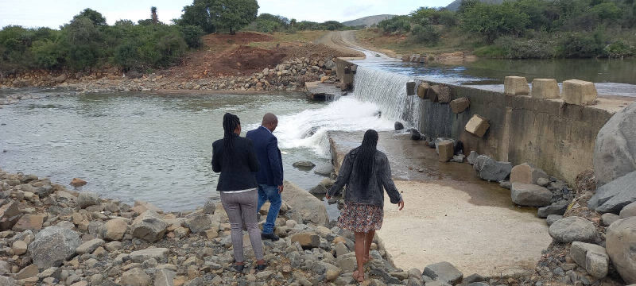
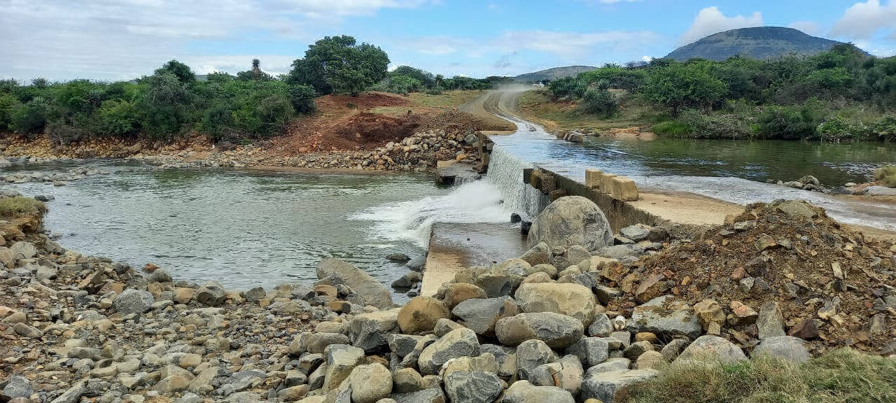
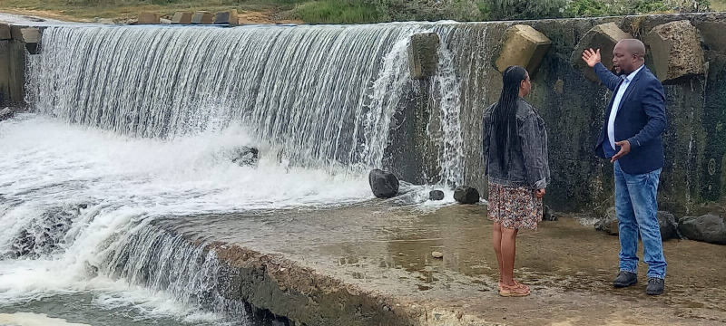

KZN Outreach
April - May 2022,
KwaZulu Natal South Africa
Assisting families who lost loved ones and property following the widespread devastating floods in the area.

AKDA was in rural Msinga, KwaZulu Natal to assist a group of families who lost loved ones and property following the widespread devastating floods in the area.
One family in particular lost 2 teenage children who were washed away at a flooded bridge on their from school. Community members highlighted that up 10 people have lost their lives in the floods. Other families lost entire houses along with all valuables, including identity documents.
The local leadership highlighted that organizations do not come to rural areas, but prefer metro cities and towns, which leaves the community without sufficient support.
AKDA is seeking to work with development partners, businesses and the local municipality to rehabilitate the bridge as part of efforts to avoid further loss of life
IMAGES

